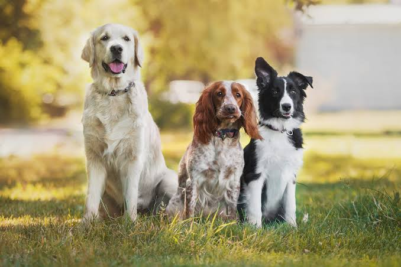
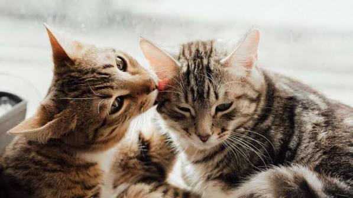
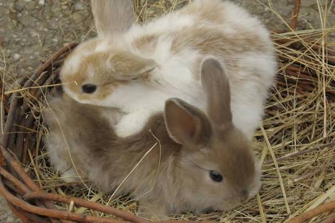
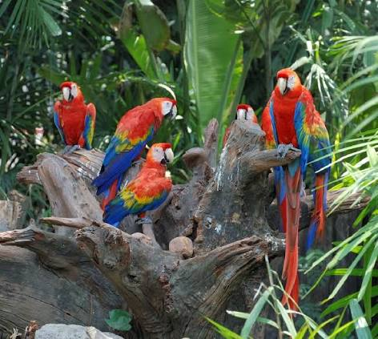

A háziállat tartása örömteli, de egyben komoly felelősség is.
Az állattartónak gondoskodnia kell az állat megfelelő
táplálásáról, egészségéről, biztonságáról és jólétéről.
Mit jelent a felelős állattartás?
Felelős állattartásról akkor beszélünk, amikor az állat gazdája
tiszteletben tartja az állat szükségleteit, és hosszú távon is
gondoskodik róla. Az állat nem játék, hanem élőlény, amelynek
szeretetre, biztonságra és megfelelő gondozásra van szüksége.




Az állattartó legfontosabb feladatai
Megfelelő táplálék és friss víz biztosítása.
Biztonságos és tiszta környezet kialakítása.
Az állat egészségének figyelemmel kísérése.
Rendszeres állatorvosi ellenőrzés biztosítása.
Elegendő mozgás és játék biztosítása.
Az állattal való türelmes és szeretetteljes bánásmód.
A négy háziállat legfontosabb szükségletei
Állat
Táplálék
Mozgás
Fontos gondozás
Kutya
Kutyatáp, hús
Séta, játék
Szőrzetápolás, állatorvos
Macska
Macskaeledel
Játék, mozgás
Alomtisztítás, szőrzetápolás
Nyúl
Széna, zöld növények
Napi mozgás
Környezet tisztítása
Papagáj
Magvak, zöldségek
Repülés, játék
Kalitka tisztítása
Mielőtt háziállatot választunk
Mielőtt valaki állatot vesz vagy örökbe fogad, fontos átgondolnia,
hogy elegendő idővel és lehetőséggel rendelkezik-e az állat
gondozásához.
Gondoljuk át, hogy milyen állat illik az életmódunkhoz.
Ismerjük meg az állat szükségleteit.
Gondoljuk át a tartás költségeit.
Biztosítsunk megfelelő helyet az állat számára.
Legyünk felkészülve a hosszú távú gondozásra.
Amit nem szabad elfelejteni
Az állat nem játék.
Az állatnak rendszeres gondozásra van szüksége.
Betegség esetén állatorvoshoz kell fordulni.
Az állatot nem szabad elhanyagolni vagy magára hagyni.
Fontos, hogy mindig biztonságos környezetben legyen.
További információk
Az állattartásról az alábbi oldalakon
is lehet további információkat találni: